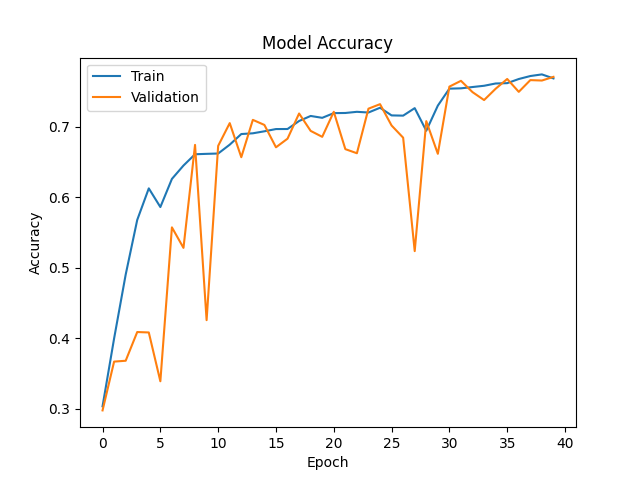
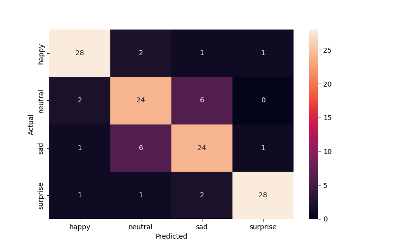

        <html>
        <head><title>Model Summary - 2024-04-10 14:39:02</title></head>
        <body>
        <h1>Model Configuration</h1>
        <pre>model:
  compile:
    learning_rate: 0.01
    optimizer: Adagrad
    optimizer_name: adam
  data:
    color_layers: 1
    color_mode: grayscale
    img_height: 48
    img_width: 48
    use_data_loaders: true
  layers:
  - filters: 64
    kernel_size:
    - 2
    - 2
    padding: same
    type: Conv2D
  - type: BatchNormalization
  - alpha: 0.1
    type: LeakyReLU
  - pool_size:
    - 2
    - 2
    type: MaxPooling2D
  - filters: 128
    kernel_size:
    - 2
    - 2
    padding: same
    type: Conv2D
  - type: BatchNormalization
  - alpha: 0.1
    type: LeakyReLU
  - pool_size:
    - 2
    - 2
    type: MaxPooling2D
  - filters: 256
    kernel_size:
    - 2
    - 2
    padding: same
    type: Conv2D
  - type: BatchNormalization
  - alpha: 0.1
    type: LeakyReLU
  - pool_size:
    - 2
    - 2
    type: MaxPooling2D
  - filters: 512
    kernel_size:
    - 2
    - 2
    padding: same
    type: Conv2D
  - type: BatchNormalization
  - alpha: 0.1
    type: LeakyReLU
  - pool_size:
    - 2
    - 2
    type: MaxPooling2D
  - filters: 128
    kernel_size:
    - 2
    - 2
    padding: same
    type: Conv2D
  - type: BatchNormalization
  - alpha: 0.1
    type: LeakyReLU
  - pool_size:
    - 2
    - 2
    type: MaxPooling2D
  - type: Flatten
  - activation: relu
    type: Dense
    units: 512
  - activation: relu
    type: Dense
    units: 128
  - type: Dense
    units: 64
  - type: BatchNormalization
  - type: ReLU
  - activation: softmax
    type: Dense
    units: 4
  train:
    batch_size: 128
    epochs: 40
    patience: 7
</pre>
        <h1>Model Summary</h1>
        <pre>Model: "sequential"
┏━━━━━━━━━━━━━━━━━━━━━━━━━━━━━━━━━━━━━━┳━━━━━━━━━━━━━━━━━━━━━━━━━━━━━┳━━━━━━━━━━━━━━━━━┓
┃ Layer (type)                         ┃ Output Shape                ┃         Param # ┃
┡━━━━━━━━━━━━━━━━━━━━━━━━━━━━━━━━━━━━━━╇━━━━━━━━━━━━━━━━━━━━━━━━━━━━━╇━━━━━━━━━━━━━━━━━┩
│ conv2d (Conv2D)                      │ (None, 48, 48, 64)          │             320 │
├──────────────────────────────────────┼─────────────────────────────┼─────────────────┤
│ batch_normalization                  │ (None, 48, 48, 64)          │             256 │
│ (BatchNormalization)                 │                             │                 │
├──────────────────────────────────────┼─────────────────────────────┼─────────────────┤
│ leaky_re_lu (LeakyReLU)              │ (None, 48, 48, 64)          │               0 │
├──────────────────────────────────────┼─────────────────────────────┼─────────────────┤
│ max_pooling2d (MaxPooling2D)         │ (None, 24, 24, 64)          │               0 │
├──────────────────────────────────────┼─────────────────────────────┼─────────────────┤
│ conv2d_1 (Conv2D)                    │ (None, 24, 24, 128)         │          32,896 │
├──────────────────────────────────────┼─────────────────────────────┼─────────────────┤
│ batch_normalization_1                │ (None, 24, 24, 128)         │             512 │
│ (BatchNormalization)                 │                             │                 │
├──────────────────────────────────────┼─────────────────────────────┼─────────────────┤
│ leaky_re_lu_1 (LeakyReLU)            │ (None, 24, 24, 128)         │               0 │
├──────────────────────────────────────┼─────────────────────────────┼─────────────────┤
│ max_pooling2d_1 (MaxPooling2D)       │ (None, 12, 12, 128)         │               0 │
├──────────────────────────────────────┼─────────────────────────────┼─────────────────┤
│ conv2d_2 (Conv2D)                    │ (None, 12, 12, 256)         │         131,328 │
├──────────────────────────────────────┼─────────────────────────────┼─────────────────┤
│ batch_normalization_2                │ (None, 12, 12, 256)         │           1,024 │
│ (BatchNormalization)                 │                             │                 │
├──────────────────────────────────────┼─────────────────────────────┼─────────────────┤
│ leaky_re_lu_2 (LeakyReLU)            │ (None, 12, 12, 256)         │               0 │
├──────────────────────────────────────┼─────────────────────────────┼─────────────────┤
│ max_pooling2d_2 (MaxPooling2D)       │ (None, 6, 6, 256)           │               0 │
├──────────────────────────────────────┼─────────────────────────────┼─────────────────┤
│ conv2d_3 (Conv2D)                    │ (None, 6, 6, 512)           │         524,800 │
├──────────────────────────────────────┼─────────────────────────────┼─────────────────┤
│ batch_normalization_3                │ (None, 6, 6, 512)           │           2,048 │
│ (BatchNormalization)                 │                             │                 │
├──────────────────────────────────────┼─────────────────────────────┼─────────────────┤
│ leaky_re_lu_3 (LeakyReLU)            │ (None, 6, 6, 512)           │               0 │
├──────────────────────────────────────┼─────────────────────────────┼─────────────────┤
│ max_pooling2d_3 (MaxPooling2D)       │ (None, 3, 3, 512)           │               0 │
├──────────────────────────────────────┼─────────────────────────────┼─────────────────┤
│ conv2d_4 (Conv2D)                    │ (None, 3, 3, 128)           │         262,272 │
├──────────────────────────────────────┼─────────────────────────────┼─────────────────┤
│ batch_normalization_4                │ (None, 3, 3, 128)           │             512 │
│ (BatchNormalization)                 │                             │                 │
├──────────────────────────────────────┼─────────────────────────────┼─────────────────┤
│ leaky_re_lu_4 (LeakyReLU)            │ (None, 3, 3, 128)           │               0 │
├──────────────────────────────────────┼─────────────────────────────┼─────────────────┤
│ max_pooling2d_4 (MaxPooling2D)       │ (None, 1, 1, 128)           │               0 │
├──────────────────────────────────────┼─────────────────────────────┼─────────────────┤
│ flatten (Flatten)                    │ (None, 128)                 │               0 │
├──────────────────────────────────────┼─────────────────────────────┼─────────────────┤
│ dense (Dense)                        │ (None, 512)                 │          66,048 │
├──────────────────────────────────────┼─────────────────────────────┼─────────────────┤
│ dense_1 (Dense)                      │ (None, 128)                 │          65,664 │
├──────────────────────────────────────┼─────────────────────────────┼─────────────────┤
│ dense_2 (Dense)                      │ (None, 64)                  │           8,256 │
├──────────────────────────────────────┼─────────────────────────────┼─────────────────┤
│ batch_normalization_5                │ (None, 64)                  │             256 │
│ (BatchNormalization)                 │                             │                 │
├──────────────────────────────────────┼─────────────────────────────┼─────────────────┤
│ re_lu (ReLU)                         │ (None, 64)                  │               0 │
├──────────────────────────────────────┼─────────────────────────────┼─────────────────┤
│ dense_3 (Dense)                      │ (None, 4)                   │             260 │
└──────────────────────────────────────┴─────────────────────────────┴─────────────────┘
 Total params: 1,096,452 (4.18 MB)
 Trainable params: 1,094,148 (4.17 MB)
 Non-trainable params: 2,304 (9.00 KB)
</pre>
        <h2>Test Accuracy</h2>
        <p>
1/1 ━━━━━━━━━━━━━━━━━━━━ 0s 37ms/step - accuracy: 0.8125 - loss: 0.5272
1/1 ━━━━━━━━━━━━━━━━━━━━ 0s 38ms/step - accuracy: 0.8125 - loss: 0.5272

1/1 ━━━━━━━━━━━━━━━━━━━━ 0s 351ms/step
1/1 ━━━━━━━━━━━━━━━━━━━━ 0s 351ms/step
</p>
        <h2>Accuracy Plot</h2>
        
        <h2>Classification Report</h2>
        <pre>              precision    recall  f1-score   support

       happy       0.88      0.88      0.88        32
     neutral       0.73      0.75      0.74        32
         sad       0.73      0.75      0.74        32
    surprise       0.93      0.88      0.90        32

    accuracy                           0.81       128
   macro avg       0.82      0.81      0.81       128
weighted avg       0.82      0.81      0.81       128

</pre>
        <h2>History</h2>
        <pre>Epoch 1: accuracy: 0.3032, loss: 1.3726, val_accuracy: 0.2974, val_loss: 1.3664, learning_rate: 0.0100
Epoch 2: accuracy: 0.3996, loss: 1.2323, val_accuracy: 0.3667, val_loss: 1.7306, learning_rate: 0.0100
Epoch 3: accuracy: 0.4902, loss: 1.1178, val_accuracy: 0.3679, val_loss: 1.2888, learning_rate: 0.0100
Epoch 4: accuracy: 0.5679, loss: 1.0038, val_accuracy: 0.4087, val_loss: 1.4585, learning_rate: 0.0100
Epoch 5: accuracy: 0.6127, loss: 0.9164, val_accuracy: 0.4081, val_loss: 1.3962, learning_rate: 0.0100
Epoch 6: accuracy: 0.5862, loss: 0.9596, val_accuracy: 0.3388, val_loss: 1.4971, learning_rate: 0.0100
Epoch 7: accuracy: 0.6262, loss: 0.8841, val_accuracy: 0.5574, val_loss: 1.2503, learning_rate: 0.0100
Epoch 8: accuracy: 0.6452, loss: 0.8441, val_accuracy: 0.5282, val_loss: 1.1690, learning_rate: 0.0100
Epoch 9: accuracy: 0.6612, loss: 0.8010, val_accuracy: 0.6745, val_loss: 0.8018, learning_rate: 0.0100
Epoch 10: accuracy: 0.6618, loss: 0.8170, val_accuracy: 0.4256, val_loss: 1.3749, learning_rate: 0.0100
Epoch 11: accuracy: 0.6623, loss: 0.8074, val_accuracy: 0.6731, val_loss: 0.7710, learning_rate: 0.0100
Epoch 12: accuracy: 0.6748, loss: 0.7848, val_accuracy: 0.7054, val_loss: 0.7119, learning_rate: 0.0100
Epoch 13: accuracy: 0.6899, loss: 0.7475, val_accuracy: 0.6570, val_loss: 0.8301, learning_rate: 0.0100
Epoch 14: accuracy: 0.6910, loss: 0.7426, val_accuracy: 0.7101, val_loss: 0.7105, learning_rate: 0.0100
Epoch 15: accuracy: 0.6938, loss: 0.7526, val_accuracy: 0.7028, val_loss: 0.7771, learning_rate: 0.0100
Epoch 16: accuracy: 0.6970, loss: 0.7319, val_accuracy: 0.6711, val_loss: 0.7593, learning_rate: 0.0100
Epoch 17: accuracy: 0.6971, loss: 0.7201, val_accuracy: 0.6833, val_loss: 0.8162, learning_rate: 0.0100
Epoch 18: accuracy: 0.7085, loss: 0.7044, val_accuracy: 0.7191, val_loss: 0.6958, learning_rate: 0.0100
Epoch 19: accuracy: 0.7156, loss: 0.7009, val_accuracy: 0.6944, val_loss: 0.7342, learning_rate: 0.0100
Epoch 20: accuracy: 0.7130, loss: 0.6925, val_accuracy: 0.6860, val_loss: 0.7582, learning_rate: 0.0100
Epoch 21: accuracy: 0.7196, loss: 0.6844, val_accuracy: 0.7215, val_loss: 0.6718, learning_rate: 0.0100
Epoch 22: accuracy: 0.7198, loss: 0.6772, val_accuracy: 0.6685, val_loss: 0.8110, learning_rate: 0.0100
Epoch 23: accuracy: 0.7215, loss: 0.6768, val_accuracy: 0.6626, val_loss: 0.8596, learning_rate: 0.0100
Epoch 24: accuracy: 0.7205, loss: 0.6763, val_accuracy: 0.7259, val_loss: 0.6744, learning_rate: 0.0100
Epoch 25: accuracy: 0.7272, loss: 0.6626, val_accuracy: 0.7324, val_loss: 0.6663, learning_rate: 0.0100
Epoch 26: accuracy: 0.7164, loss: 0.6923, val_accuracy: 0.7020, val_loss: 0.7541, learning_rate: 0.0100
Epoch 27: accuracy: 0.7161, loss: 0.6965, val_accuracy: 0.6847, val_loss: 0.8234, learning_rate: 0.0100
Epoch 28: accuracy: 0.7267, loss: 0.6688, val_accuracy: 0.5236, val_loss: 1.2699, learning_rate: 0.0100
Epoch 29: accuracy: 0.6946, loss: 0.7407, val_accuracy: 0.7083, val_loss: 0.7133, learning_rate: 0.0100
Epoch 30: accuracy: 0.7303, loss: 0.6586, val_accuracy: 0.6618, val_loss: 0.8863, learning_rate: 0.0100
Epoch 31: accuracy: 0.7544, loss: 0.6156, val_accuracy: 0.7573, val_loss: 0.6310, learning_rate: 0.0020
Epoch 32: accuracy: 0.7548, loss: 0.6090, val_accuracy: 0.7655, val_loss: 0.5848, learning_rate: 0.0020
Epoch 33: accuracy: 0.7567, loss: 0.6041, val_accuracy: 0.7494, val_loss: 0.6324, learning_rate: 0.0020
Epoch 34: accuracy: 0.7585, loss: 0.5936, val_accuracy: 0.7382, val_loss: 0.6652, learning_rate: 0.0020
Epoch 35: accuracy: 0.7617, loss: 0.5902, val_accuracy: 0.7543, val_loss: 0.6239, learning_rate: 0.0020
Epoch 36: accuracy: 0.7622, loss: 0.5873, val_accuracy: 0.7681, val_loss: 0.5844, learning_rate: 0.0020
Epoch 37: accuracy: 0.7681, loss: 0.5812, val_accuracy: 0.7498, val_loss: 0.6260, learning_rate: 0.0020
Epoch 38: accuracy: 0.7723, loss: 0.5643, val_accuracy: 0.7665, val_loss: 0.5993, learning_rate: 0.0020
Epoch 39: accuracy: 0.7746, loss: 0.5599, val_accuracy: 0.7659, val_loss: 0.5899, learning_rate: 0.0020
Epoch 40: accuracy: 0.7689, loss: 0.5723, val_accuracy: 0.7711, val_loss: 0.5749, learning_rate: 0.0020
</pre>
        <h2>Confusion Matrix</h2>
        
        <h2>Predicted Images</h2>
        
        </body>
        </html>
        